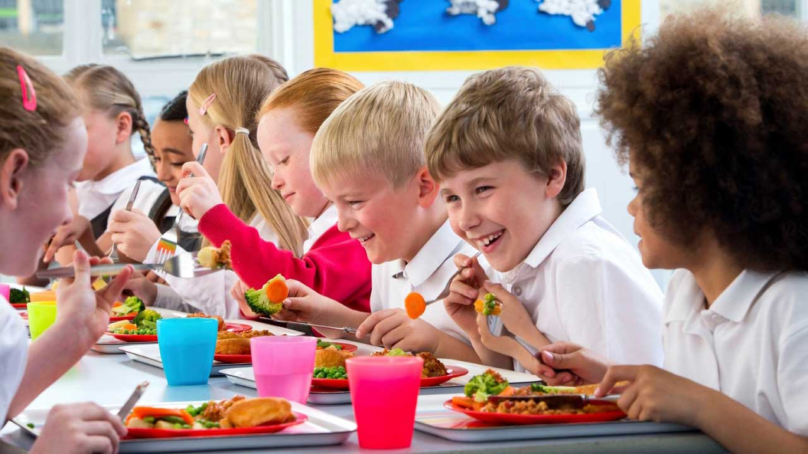
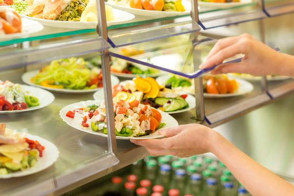

Related Images
SCHOOLS

For a memorable meal the quality of the service
is something that guests often remember as much as the food and
drink served.
That means that restaurant servers must show extensive knowledge
of all types of cuisine and dishes, especially the ingredients and
cooking style of the dishes on an a la carte menu. They will need to
know and understand the methods of preparation and serving, along with
the tools used.
Regardless of whether it is a self-service cafeteria or a five star hotel
restaurant good manners, a smart appearance, and impeccable personal hygiene
are equally essential.
CAFETERIA

We can manage existing cafeteria's or even layout, purchase,
and install equipment necessary to prepare meals to serve your employees/guests.
Working closely with an interior design team, we work up a concept for what your
new cafeteria can look like; and once approved we go to work!
Cafeteria services include a huge variety of home-style food prepared and served
for our guests. Multiple stations offer guests many choices and increase service
speed.
FAMILY
The Family Food Service is a new network of Glasgow-based partners
committed to tackling Holiday Hunger. It will provide food to families during the school
holidays and outwith normal school hours. The service is currently made up of four partners;
Move On, Heart of Scotstoun, Community Central Hall and Annexe Communities, but we hope this
network will continue to grow over the next few months. If you are interested in accessing
the Family Food Service, or partnering with us, please get in touch.
Food service is the industry related to making, transporting or
selling prepared foods to restaurants, hospitals, schools and lodging
establishments.
Contact Us:Sevilla,San Fernando City, Philippines
Mobile: 0912-345-6789 Email: arlacompany@gmail.com
We Recommend
Who We Are
Mission/Vision
List of Members
Activities with Food Regulators
External Engagements
Copyright @ 2018 Food inc.All right reserved | Privacy policy | Term of Us | Sales and Refund |